ribbon¶
タンパク質・ポリペプチドの主鎖をスプライン曲線でリボン状に表現する Renderer です。 対象 Object: 分子 (MolCoord)。
- ヘリックスをリボン状
- シートを板状
- コイルをチューブ状
に表示します。
正しくリボン状に表示されるには、タンパク質分子に二次構造が割り当てられている必要が あります。二次構造は通常ファイルの読み込み時に自動で割り当てられます。 手動で再割り当てする場合は Tools メニューの Reassign secondary str... を使います (→ Tools メニュー)。
RNA・DNA などタンパク質以外の鎖状ポリマーに対して ribbon を作成した場合は、 単に tube と同様のチューブ状表示になります。
プリセットスタイル¶
よく使う ribbon の設定はスタイルとして用意されています。 シーンツリーで Renderer を右クリックし、スタイルの一覧から選んで適用します (→ スタイル)。
- Default
- 既定の ribbon 表示。コイルは太めのチューブ、ヘリックスとシートは断面が四角い板状のリボン (下図左)
- Fancy1
- Molscript 風の ribbon 表示。ヘリックスの内側とシートの側面は白っぽい色で塗られ、 ヘリックスの断面はダンベル状になる (下図中央)
- Round
- コイルは細めのチューブ、ヘリックスとシートは断面が楕円状の丸みを帯びたリボン (下図右)
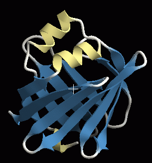 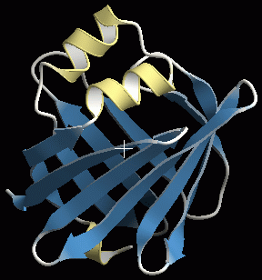 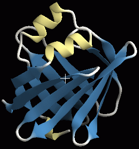
{kind=link}
{kind=link}
{kind=link}
プロパティ¶
共通プロパティ (名前・表示・マテリアル・エッジラインなど) は Renderer 共通プロパティ を参照してください。
Ribbon¶
- Section detail
- 断面方向のポリゴン分割数。大きい値を指定するほど細かく分割されて表示がきれいに なりますが、描画速度は低下します
- Axial detail
- 鎖方向のポリゴン分割数。大きい値を指定するほど細かく分割されて表示がきれいに なりますが、描画速度は低下します
- Smooth color
- 隣り合う残基間で色が異なる場合、ON だと残基間の着色がグラデーションになり (下図左)、
OFF だと中央で色が変わります (下図右)
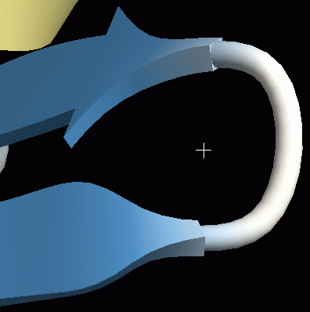
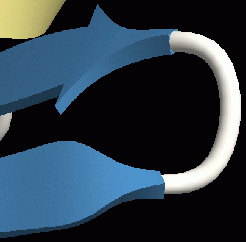
- Pivot atom name
- リボンやチューブが通る原子の名前。タンパク質の場合は既定で CA (Cα 炭素原子) に なっており、通常変更する必要はありません
- Cap type
- 末端の形状。sphere で球状 (下図左)、flat で平ら (下図中央)、
none では末端のポリゴンが生成されず穴が開いたようになります (下図右)
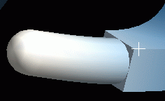
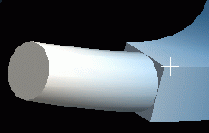
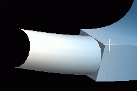
- Segment-end fade out
- セグメント末端をフェードアウトさせるかどうか
{kind=link}
{kind=link}
{kind=link}
{kind=link}
{kind=link}
Helix¶
ヘリックス部分の断面形状と、開始 (Tail) / 終了 (Head) 部分の接続形状の設定です。
- Section type
- 断面の形状。下図左から Elliptical (楕円形)、Rectangle (四角)、
Round rectangle (角なし四角)、Fancy (ダンベル型)
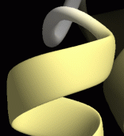
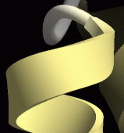
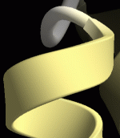
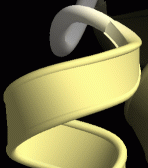
- Back color
- ヘリックスの内側の色。OFF だと内側も外側も同じ色になります。既定は OFF
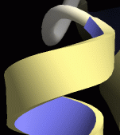
- Width
- ヘリックスの厚さ。単位は Å
- Tuber
- ヘリックスの幅。Width の何倍にするかで指定します
- Sharpness
- Section type により意味が変わります。
Round rectangle の場合は長方形の角の取れ具合。1 にするとほぼ角張った形状に、 0 に近いとより丸みを帯びた形状になります。
Fancy の場合はダンベル型の両端の円の大きさ。0 に近い値にすると厚さが薄くなり 縁が際立った形状に (下図左、値 = 0)、0.5 に近づくと Round rectangle に近い形状に (下図中央、値 = 0.5)、0.5 以上にすると下図右 (値 = 0.75) のような形状になります
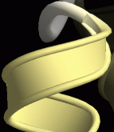
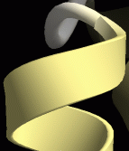
- Smoothness
- 0 だとヘリックスが pivot atom (既定は Cα 原子) の位置を通る曲線になり、 それ以下だと pivot atom を通らずになめらかな曲線になります
- Head type / Tail type
- ヘリックスの終了 (Head) / 開始 (Tail) 部分の形状。
Round (滑らかに接続、下図左)、Flat (不連続、下図中央)、
Arrow (矢型、下図右)
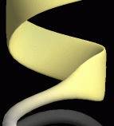
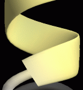
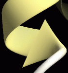
ヘリックスの末端を arrow にすることはほとんどありません。arrow 関連の設定は 後述の Sheet を参照してください - Head power / Tail power
- 接続の滑らかさ。下図は type が round の場合に値を 1、1.5、3 と変化させたもの
(round の場合は 1 以下の値を指定しても意味がありません)
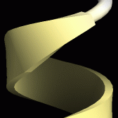
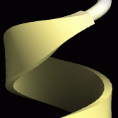
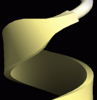
- Head arrow height / width
- type が arrow の場合のみ有効。矢の高さ・幅を指定します (→ Sheet)
{kind=link}
{kind=link}
{kind=link}
{kind=link}
{kind=link}
{kind=link}
{kind=link}
{kind=link}
{kind=link}
{kind=link}
{kind=link}
{kind=link}
{kind=link}
{kind=link}
Sheet¶
ヘリックスと同じ設定項目があります。各設定の意味もヘリックスとほぼ同じなので、 Helix を参照してください。シートで意味が異なる設定のみ以下に示します。
- Side color
- シートの場合は、裏面ではなく側面の色が変わります
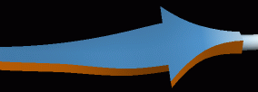
- Smoothness
- シートの場合、0 にするとうねりすぎるので既定は 0.5 です (伸びた β シートになる)。
ただし側鎖を表示する場合は、0.5 だと側鎖が浮いたようになってしまうので
0 に変更したほうがよいことがあります
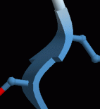
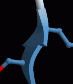
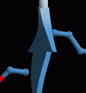
- Head type = Arrow
- β シートの先端が矢状になります (Tail を矢状にすることはほとんどありません)。
このとき Head power は矢の先端のとがり具合に影響します。
下図は右から 0.5、中央 1、左 2 の場合です
- Head arrow width
- 矢の先端部分の幅。100% にすると矢の幅はシート本体の幅の 3 倍になり、 0% にすると幅はシート本体と同じ (= 矢の先端部分なし) になります
- Head arrow height
- 矢の先端部分の高さ。値を減少させると矢の先端部の高さが減少します
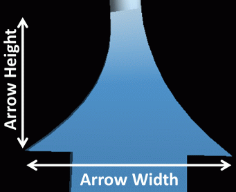
{kind=link}
{kind=link}
{kind=link}
{kind=link}
{kind=link}
{kind=link}
{kind=link}
{kind=link}
Coil¶
コイル部分は Head / Tail の概念がないので、断面形状に関する設定項目のみです。 各設定の意味は Helix の断面に関する部分と同じです。
関連項目¶
- Renderer の一覧
- cartoon — 円柱ヘリックスの二次構造表示
- tube — 二次構造によらないチューブ表示
- マテリアル / エッジライン
最終確認: 2026-08-11 / 確認対象: 開発版 (tritium)